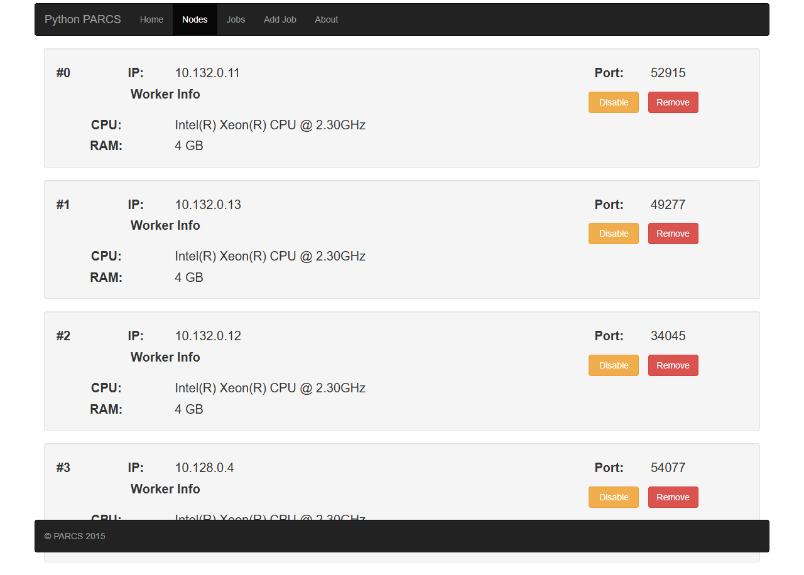
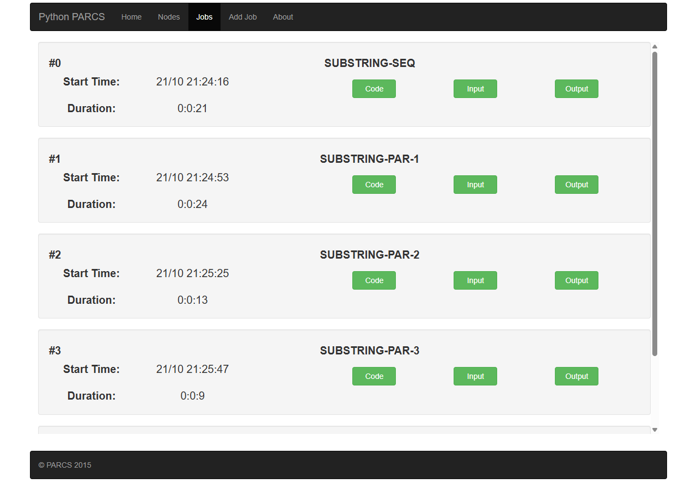
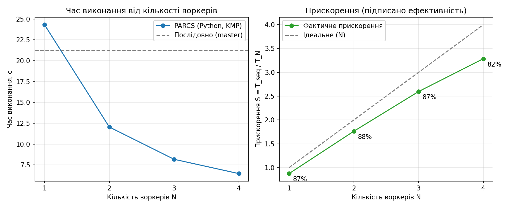

Обрано тему 3.1 з переліку: паралельний пошук підрядка за алгоритмом Кнута–Морріса–Пратта (КМП). Задача: порахувати, скільки разів патерн abcab зустрічається в тексті довжиною L = 20 000 000 символів.
i детерміновано (хеш від i), тому всі вузли мають однаковий текст. По мережі йдуть лише патерн і межі діапазону.[0, L − m + 1) на N рівних діапазонів (m = 5) і надсилає кожному воркеру (патерн, from, to).[from, to + m − 1) і рахує входження, що починаються в [from, to). Діапазони перетинаються на m − 1 символ, тож збіг на межі не губиться й не рахується двічі.Послідовна версія (еталон) виконує той самий КМП на master-і по всьому тексту. Обидві версії мають давати однакову кількість збігів; у всіх прогонах це 19 245.
| Вузол | Роль | Внутрішня IP | Зона | Машина |
|---|---|---|---|---|
| master | PARCS master: веб-інтерфейс :8080, планувальник, клієнт задачі | 10.132.0.10 | europe-west1-b | n1-standard-1 (1 vCPU) |
| worker-1 | PARCS worker | 10.132.0.11 | europe-west1-b | n1-standard-1 (1 vCPU) |
| worker-2 | PARCS worker | 10.132.0.12 | europe-west1-b | n1-standard-1 (1 vCPU) |
| worker-3 | PARCS worker | 10.132.0.13 | europe-west1-b | n1-standard-1 (1 vCPU) |
| worker-4 | PARCS worker | 10.128.0.4 | us-central1-a | n1-standard-1 (1 vCPU) |
Усі вузли працюють на Container-Optimized OS і запускають контейнер hummer12007/parcs-node. Воркери самі реєструються на master через внутрішню мережу. Задачі подаються через веб-API master-а.


Вхід: L = 20 000 000, патерн abcab. Прискорення S = T₁ / T_N, ефективність E = S / N, де T₁ — послідовний еталон.
| Режим | Воркерів N | Знайдено збігів | Час, с | Прискорення S | Ефективність E |
|---|---|---|---|---|---|
| послідовно (master) | — | 19 245 | 21.249 | — | — |
| PARCS | 1 | 19 245 | 24.311 | 0.87 | 87 % |
| PARCS | 2 | 19 245 | 12.050 | 1.76 | 88 % |
| PARCS | 3 | 19 245 | 8.183 | 2.60 | 87 % |
| PARCS | 4 | 19 245 | 6.466 | 3.29 | 82 % |
Після перезапуску кластера (VM були зупинені між прогонами) ті самі задачі були запущені повторно з тими самими вхідними файлами.
| Режим | Воркерів N | Знайдено збігів | Час, с (прогін 1) | Час, с (прогін 2) | Різниця |
|---|---|---|---|---|---|
| послідовно (master) | — | 19 245 | 21.249 | 20.896 | 1.7 % |
| PARCS | 1 | 19 245 | 24.311 | 23.756 | 2.3 % |
| PARCS | 2 | 19 245 | 12.050 | 12.091 | 0.3 % |
| PARCS | 3 | 19 245 | 8.183 | 8.066 | 1.4 % |
| PARCS | 4 | 19 245 | 6.466 | 6.534 | 1.0 % |
Кількість збігів однакова в усіх прогонах, а час відрізняється не більше ніж на 2.3 %.
/api/job/<id>/output)seq (id 0): mode=seq workers=1 count=19245 time=20.896 par (id 1): mode=par workers=1 count=19245 time=23.756 par (id 2): mode=par workers=2 count=19245 time=12.091 par (id 3): mode=par workers=3 count=19245 time=8.066 par (id 4): mode=par workers=4 count=19245 time=6.534

Інтерпретація. Час майже обернено пропорційний N: від 24.3 с на одному воркері до 6.5 с на чотирьох. Ефективність стабільна (82–88 %). Втрати пояснюються накладними витратами PARCS: передача задачі та розв'язку, RPC через Pyro4, створення точок і повернення результатів. Для одного воркера накладні витрати перевищують виграш від паралельності, тому 1 воркер трохи повільніший за послідовний еталон на master-і (24.3 с проти 21.2 с).
Потрібні: gcloud (Google Cloud SDK) і акаунт з увімкненим білінгом.
# 0. Вхід і проєкт
gcloud auth login
gcloud config set project <PROJECT_ID>
gcloud services enable compute.googleapis.com
# 1. Фаєрвол: веб-інтерфейс і SSH тільки з твого IP (замість 0.0.0.0/0)
MYIP=$(curl -s https://api.ipify.org)
gcloud compute firewall-rules create parcs-allow-me --network=default --direction=INGRESS \
--allow=tcp:8080,tcp:22 --source-ranges="$MYIP/32"
# 2. Стартовий скрипт: відкриває внутрішню мережу і порт 8080 у iptables хоста COS
# та запускає контейнер PARCS з роллю з метаданих (parcs-args)
cat > startup.sh <<'EOF'
#!/bin/bash
iptables -C INPUT -s 10.0.0.0/8 -j ACCEPT 2>/dev/null || iptables -I INPUT -s 10.0.0.0/8 -j ACCEPT
iptables -C INPUT -p tcp --dport 8080 -j ACCEPT 2>/dev/null || iptables -I INPUT -p tcp --dport 8080 -j ACCEPT
ARGS=$(curl -s -H 'Metadata-Flavor: Google' http://metadata.google.internal/computeMetadata/v1/instance/attributes/parcs-args)
docker rm -f parcs >/dev/null 2>&1
docker run -d --name parcs --restart=always --network=host -e PARCS_ARGS="$ARGS" registry.hub.docker.com/hummer12007/parcs-node
EOF
# 3. Master
gcloud compute instances create master --zone=europe-west1-b --machine-type=n1-standard-1 \
--image-family=cos-stable --image-project=cos-cloud --tags=parcs \
--metadata=parcs-args=master --metadata-from-file=startup-script=startup.sh
MASTER_IP=$(gcloud compute instances describe master --zone=europe-west1-b --format='value(networkInterfaces[0].networkIP)')
# 4. Воркери (N штук)
for i in 1 2 3; do
gcloud compute instances create worker-$i --zone=europe-west1-b --machine-type=n1-standard-1 \
--image-family=cos-stable --image-project=cos-cloud --tags=parcs \
--metadata="parcs-args=worker $MASTER_IP" --metadata-from-file=startup-script=startup.sh
done
# 5. Перевірка реєстрації воркерів (через 1–3 хв)
curl -s http://<MASTER_EXTERNAL_IP>:8080/api/worker
# 6. Задача: http://<MASTER_EXTERNAL_IP>:8080/add_job або API:
curl -F job_name=test -F solution_file=@substring_solution.py -F input_file=@input_par.txt \
http://<MASTER_EXTERNAL_IP>:8080/api/job
curl http://<MASTER_EXTERNAL_IP>:8080/api/job/<ID>/output
# Кількість воркерів N = кількість увімкнених воркерів:
curl -X POST http://<MASTER_EXTERNAL_IP>:8080/api/worker/<ID>/enable # або /disable
# 7. Після роботи — зупинити VM, щоб не платити за простій
gcloud compute instances stop master worker-1 worker-2 worker-3 --zone=europe-west1-b
Розв'язок substring_solution.py і вхідні файли input_par.txt / input_seq.txt лежать у репозиторії, папка solution/.
andriikhavro/parcshostserver і parcsdaemon мають Windows-збірки (windowsservercore-1709), а Linux-тег dotnetcore-2.1 не відповідає поточному коду (.NET Framework 4.6.1, System.ServiceProcess). Тому перейшов на PARCS-Python.winget пропонує лише 4.6.2 і новіші, без пакета MSBuild видає MSB3644. Перенацілив проєкти на v4.8 (встановлена версія). Цей крок був для спроби з C#, у фінальному рішенні не використовувався.gcloud compute instances create-with-container вимкнено для проєкту (помилка «option ... is discontinued»). Замість нього: Container-Optimized OS і стартовий скрипт з docker run.# -*- coding: utf-8 -*- воркер не може завантажити модуль з кириличними коментарями (Non-ASCII character '\xd0' ... no encoding declared), і задача падає з порожньою причиною.iptables -P INPUT DROP і відкритий лише порт 22. Без правил для 10.0.0.0/8 і 8080 воркери не реєструються (Connection timed out), хоча правила GCP відкриті. Ці правила мають бути в стартовому скрипті, інакше вони зникають після перезапуску VM.n1-standard-1 мають 1 vCPU, тож «один воркер = одне ядро» виконується природно./tmp контейнера), тому результати треба знімати одразу після прогонів.